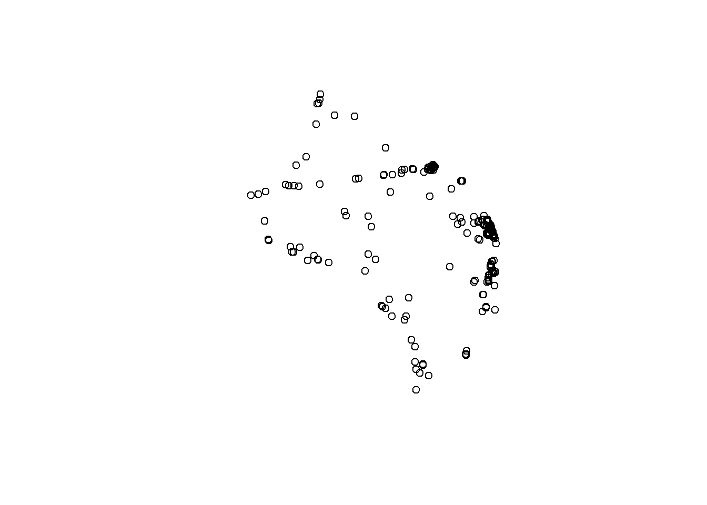

Aplicação
4.3.3 Estudo de Caso 1
Para a primeira aplicação, serão utilizados dados do exemplo 12-14 do livro do autor Montgomery et al (2016) chamado Estatistica Aplicada e Probabilidade para Engenheiros. O enunciado é o seguinte: “”
options(repos = list(CRAN="http://cran.rstudio.com/"))
options("install.lock"=FALSE)
install.packages("rlang")## Installing package into 'C:/Users/wesle/Documents/R/win-library/4.1'
## (as 'lib' is unspecified)## package 'rlang' successfully unpacked and MD5 sums checked## Warning: cannot remove prior installation of package 'rlang'##
## The downloaded binary packages are in
## C:\Users\wesle\AppData\Local\Temp\RtmpU7MJ0J\downloaded_packagesupdate.packages(c('ggplot2','tidyverse'))
## Carregar pacotes que serão usados
#library(tidyverse)
#install.packages("tidyverse")
#library(ggplot2)
## Criação do dataframe
#dados <- read.delim("Ex12_14_Montgomery.txt")
#View(dados)
## Regressão linear
#mod1 <- lm(Qualidade ~ Claridade + Aroma + Corpo + Sabor + Afinacao, dados)
#summary(mod1) # Estatísticas do modeloO Coeficiente de Determinação tem como valor 0,7206, ou seja…
## Plotando mod1
#plot(mod1, which = 4)
#par(mfrow=c(2,2))
## Análise dos resíduos
#res1 <- resid(mod1)
#res_std1 <- (res1 - mean(res1))/sd(res1) # Padronização dos resíduos
#par(mfrow=c(2,2))
#plot(res_std1)
#hist(res_std1)
#boxplot(res_std1)
#qqnorm(res_std1)Para a análise residual, é necessário investigar se os resíduos refletem as propriedades impostas pelo erro do modelo. Os resíduos não podem apresentar uma tendência e, por isso, eles serão analisado abaixo.
- Residuals vs Fitted
O gráfico mostra a relação entre os resíduos e os valores ajustados. Como a distribuição dos resíduos próxima à linha pontilhada demonsta um bom ajuste do modelo, é possível verificar se resíduos tem padrões não-lineares. No caso do nosso modelo,
- Normal Q-Q
O gráfico mostra se os resíduos são normalmente distribuídos. Mais uma vez, o ideal é que a distribuição dos resíduos acompanhe a linha pontilhada. Pelo gráfico é possível perceber que a distribuição dos resíduos está
- Scale-Location
O gráfico mostra se os resíduos são igualmente distribuídos em relação ao intervalo de preditores (Fitted values).Também é possível checar a homocedasticidade. O ideal, no caso, seria que os resíduos estivessem uniformemente distribuídos ao redor da linha vermelha. Para o caso do nosso modelo,
- Residuals vs Leverage
O gráfico ajuda na visualização de possíveis casos influentes, ou seja, outliers que influenciam na análise de regressão linear. O que quer dizer que, sem o outlier, o resultado da regressão seria diferente. No caso do modelo criado, há possibilidade
- Cook’s distance
A Distância de Cook informa o quanto um caso é capaz de influenciar o modelo de regressão. Portanto, o gráfico estima a influência de cada observação no modelo e, novamente, as observações são extremas.
#out1 <- cooks.distance(mod1)
#influentes1 <- out1[(CD > (3* mean(out1, na.rm=TRUE)))]
#print(influentes1)4.3.4 Estudo de Caso 2
Para o segundo estudo de caso serão utilizados dados reais de emissões dos gases de efeito estufa (GEE) por mudanças de cobertura da terra da Amazônia Legal disponibilizados pelo INPE (Instituto Nacional de Pesquisas Espaciais). Será representada a relação entre a área desmatada por ano e a emissão de 1ª ordem de \(CO_2\) na Amazônia Legal.A estimativa de 1ª ordem supõe que, de modo simplificado, 100% das emissões ocorreram no momento da mudança de uso/cobertura.
Um primeiro passo será carregar os dados:
options("install.lock"=FALSE)
options(repos = list(CRAN="http://cran.rstudio.com/"))
options("install.lock"=FALSE)
install.packages(c('rlang','tidyverse'))## Installing packages into 'C:/Users/wesle/Documents/R/win-library/4.1'
## (as 'lib' is unspecified)## package 'rlang' successfully unpacked and MD5 sums checked## Warning: cannot remove prior installation of package 'rlang'## package 'tidyverse' successfully unpacked and MD5 sums checked
##
## The downloaded binary packages are in
## C:\Users\wesle\AppData\Local\Temp\RtmpU7MJ0J\downloaded_packageslibrary(ggplot2)## Warning: package 'ggplot2' was built under R version 4.1.3#library(tidyverse)
## Carregando base de dados
dados0 <- read.csv2("Data/CO2Amazonia.csv")
dados <- na.omit(dados0)
View(dados)Agora que os dados foram carregados, o segundo passo será entender os dados. Para saber algumas propriedade dos dados carregados, será utilizado o comando head()`, que apresentará uma amostra dos dados, esummary()`, que apresenta as estatísticas básicas dos dados (média, mediana, 1º quartil, etc).
head(dados)## Year D_AreaAcc D_Area DEGRAD_Area X. VR_CO2_1stOrder VR_CO2_2ndOrder
## 1 1960 842754 842754 0 - 411 133
## 2 1961 1685508 842754 0 - 411 222
## 3 1962 2528262 842754 0 - 411 276
## 4 1963 3371016 842754 0 - 411 311
## 5 1964 4213770 842754 0 - 411 334
## 6 1965 5056524 842754 0 - 411 350
## SV_CO2Emission SV_CO2Absorption X..1 DEGRAD_CO2Emission DEGRAD_CO2Absorption
## 1 0 0 - 0 0
## 2 0 0 - 0 0
## 3 0 0 - 0 0
## 4 0 -2 - 0 0
## 5 0 -4 - 0 0
## 6 0 -7 - 0 0
## X..2 NET_1st_Order NET_2nd_Order
## 1 - 411 133
## 2 - 411 222
## 3 - 411 276
## 4 - 409 309
## 5 - 407 329
## 6 - 404 342summary(dados)## Year D_AreaAcc D_Area DEGRAD_Area
## Min. :1960 Min. : 842754 Min. : 457100 Min. : 0
## 1st Qu.:1975 1st Qu.:13484064 1st Qu.: 842754 1st Qu.: 0
## Median :1990 Median :40302326 Median :1103000 Median : 155872
## Mean :1990 Mean :37464148 Mean :1324505 Mean : 403505
## 3rd Qu.:2005 3rd Qu.:61076244 3rd Qu.:1822600 3rd Qu.: 155872
## Max. :2020 Max. :69723152 Max. :2905900 Max. :2741165
## X. VR_CO2_1stOrder VR_CO2_2ndOrder SV_CO2Emission
## Length:61 Min. : 234.0 Min. : 133.0 Min. : 0.0
## Class :character 1st Qu.: 411.0 1st Qu.: 381.0 1st Qu.: 7.0
## Mode :character Median : 541.0 Median : 603.0 Median : 39.0
## Mean : 653.6 Mean : 616.2 Mean : 48.7
## 3rd Qu.: 888.0 3rd Qu.: 844.0 3rd Qu.: 83.0
## Max. :1416.0 Max. :1107.0 Max. :138.0
## SV_CO2Absorption X..1 DEGRAD_CO2Emission DEGRAD_CO2Absorption
## Min. :-185.00 Length:61 Min. : 0.00 Min. :-245.00
## 1st Qu.:-143.00 Class :character 1st Qu.: 0.00 1st Qu.: -31.00
## Median : -81.00 Mode :character Median : 34.00 Median : -18.00
## Mean : -86.03 Mean : 81.52 Mean : -54.59
## 3rd Qu.: -28.00 3rd Qu.: 34.00 3rd Qu.: 0.00
## Max. : 0.00 Max. :691.00 Max. : 0.00
## X..2 NET_1st_Order NET_2nd_Order
## Length:61 Min. : 108.0 Min. : 133.0
## Class :character 1st Qu.: 396.0 1st Qu.: 366.0
## Mode :character Median : 550.0 Median : 667.0
## Mean : 643.2 Mean : 605.7
## 3rd Qu.: 880.0 3rd Qu.: 853.0
## Max. :1380.0 Max. :1053.0Como iremos analisar a relação entre a área desmatada por ano (D_Area) e a emissão de 1ª ordem de \(CO_2\), é importante verificar qual é o comportamento entre esses dados.
## Verificando a relação entre a variável dependente e a variável independente
plot(dados$D_Area, dados$VR_CO2_1stOrder)
## Correlação entre as variáveis da base de dados
cor.test(dados$VR_CO2_1stOrder,dados$D_Area)##
## Pearson's product-moment correlation
##
## data: dados$VR_CO2_1stOrder and dados$D_Area
## t = 152.61, df = 59, p-value < 2.2e-16
## alternative hypothesis: true correlation is not equal to 0
## 95 percent confidence interval:
## 0.9978857 0.9992442
## sample estimates:
## cor
## 0.9987358A partir desse gráfico, é possível verificar que a relação entre as variáveis é linear e, dessa forma, conforme a área desmatada aumenta, a emissão de \(CO_2\) aumenta linearmente. O valor da correlação indica que a relação entre as duas variáveis é forte e positiva, já que 0,9987358 é próximo de 1 e maior que zero.
## Construção do modelo
mod <- lm(VR_CO2_1stOrder ~ D_Area, dados, na.action = na.exclude)
summary(mod)##
## Call:
## lm(formula = VR_CO2_1stOrder ~ D_Area, data = dados, na.action = na.exclude)
##
## Residuals:
## Min 1Q Median 3Q Max
## -12.178 -12.178 -3.886 1.503 46.689
##
## Coefficients:
## Estimate Std. Error t value Pr(>|t|)
## (Intercept) 2.005e+01 4.593e+00 4.364 5.21e-05 ***
## D_Area 4.783e-04 3.134e-06 152.615 < 2e-16 ***
## ---
## Signif. codes: 0 '***' 0.001 '**' 0.01 '*' 0.05 '.' 0.1 ' ' 1
##
## Residual standard error: 15.35 on 59 degrees of freedom
## Multiple R-squared: 0.9975, Adjusted R-squared: 0.9974
## F-statistic: 2.329e+04 on 1 and 59 DF, p-value: < 2.2e-16O r² (coeficiente de determinação) do modelo é 0,9975 e, portanto, pode-se interpretar que a variável área explica 99,75% da variação na emissão de \(CO_2\) O valor indica que o modelo possui bom ajuste.
O p-value do modelo apresenta valor \(2.2e^{-16}\) e, assim, apresenta valor menor que o nível de significância (0,05), mostrando que existe baixa probabilidade dos resultados apresentados pelo modelo não possuírem erro amostral. Ou seja, existe alta probabilidade do modelo não ser um bom ajuste. Isso continuará sendo testado a diante.
De acordo com Montgomery e Runger (2021), “A análise dos resíduos é frequentemente útil na verificação da suposição de que os erros sejam distribuídos de forma aproximadamente normal, com variância constante, assim como na determinação da utilidade dos termos adicionais no modelo”. Dessa forma, abaixo será realizada a análise residual.
# Análise dos resíduos
plot(mod,which = 4)
par(mfrow=c(2,2))
plot(mod)
## Teste de normalidade
shapiro.test(mod$residuals)##
## Shapiro-Wilk normality test
##
## data: mod$residuals
## W = 0.75119, p-value = 8.119e-09Para a análise residual, é necessário investigar se os resíduos refletem as propriedades impostas pelo erro do modelo. Os resíduos não podem apresentar uma tendência e, por isso, eles serão analisado abaixo.
- Residuals vs Fitted
O gráfico mostra a relação entre os resíduos e os valores ajustados. Como a distribuição dos resíduos próxima à linha pontilhada demonsta um bom ajuste do modelo, é possível verificar se resíduos tem padrões não-lineares. No caso do nosso modelo, os resíduos não se apresentam próximos à linha pontilhada.
As observações 48, 50 e 51 apresentam grandes valores de resíduos e, por isso, é interessante realizar toda a análise após a remoção dessas observações.
- Normal Q-Q
O gráfico mostra se os resíduos são normalmente distribuídos. Mais uma vez, o ideal é que a distribuição dos resíduos acompanhe a linha pontilhada. Pelo gráfico é possível perceber que a distribuição dos resíduos está diferente da distribuição normal. As observações 48, 50 e 51 apresentam-se extremas novamente.
- Scale-Location
O gráfico mostra se os resíduos são igualmente distribuídos em relação ao intervalo de preditores (Fitted values).Também é possível checar a homocedasticidade. O ideal, no caso, seria que os resíduos estivessem uniformemente distribuídos ao redor da linha vermelha. Para o caso do nosso modelo, demonstra que há heterocedasticidade, ou seja, os resíduos não estão uniformemente distribuídos em relação ao intervalo de preditores.
- Residuals vs Leverage
O gráfico ajuda na visualização de possíveis casos influentes, ou seja, outliers que influenciam na análise de regressão linear. O que quer dizer que, sem o outlier, o resultado da regressão seria diferente. No caso do modelo criado, há possibilidade de existirem outliers influentes.
- Cook’s distance
A Distância de Cook informa o quanto um caso é capaz de influenciar o modelo de regressão. Portanto, o gráfico estima a influência de cada observação no modelo e, novamente, as observações 48, 50 e 51 são extremas.
CD <- cooks.distance(mod)
influentes <- CD[(CD > (3* mean(CD, na.rm=TRUE)))]
print(influentes)## 48 50 51 52 60 61
## 0.08358518 0.14427282 0.13748969 0.06382214 0.05991051 0.04018312É possível analisar que existem 6 observações que possuem uma distância de Cook três vezes maior que a média. Além disso, é confirmado que as observações 48, 50 e 51 são extremas.
Pelo Teste de Shapiro, é possível verificar que o p-value é menor que 0,05, portanto, o valor não é adequado. O gráfico Normal Q-Q serve como uma contra-prova, também mostrando que os dados não são normalmente distribuídos e, dessa forma, não são adequados.
Os resultados dos resíduos indicam no mínimo uma necessidade de aumento do número de dados ou uma amostra mais representativa. Além disso, outra alternativa seria a existência de outliers. Para realizar o teste de outliers, é interessante utilizar os gráficos Boxplot e Histograma.
#Encontrando potenciais outliers a partir de gráficos
hist(dados$D_Area)
hist(dados$VR_CO2_1stOrder)
A partir da análise dos resíduos, foi possível inferir que as observações 48, 50 e 51 são outliers influentes. Possivelmente, em relação a área, o outlier está abaixo de 500000 m²; enquanto para a emissão de CO2, acima de 1400 ppm. Para continuar procurando esses possíveis outliers, o pacote outliers pode ser utilizado, já que a função outlier() consegue encontrar o valor mais distante da média das variáveis.
#Encontrando os valores com maior diferença da média com o pacote `outliers`
library(outliers)## Warning: package 'outliers' was built under R version 4.1.3outArea <- outlier(dados$D_Area)
outCO2 <- outlier(dados$VR_CO2_1stOrder)
print(outArea)## [1] 2905900print(outCO2)## [1] 1416Com esse resultado, analisa-se que existe grande possibilidade de existirem outliers no conjunto de dados, já que as observações 48, 50 e 51 apresentam-se extremas e influentes no modelo de regressão. Além disso, a hipótese de que o resultado dos resíduos indica que seja necessário um maior conjunto de dados também é uma possibilidade.
Após todos os testes, por fim, o resultado do modelo de regressão linear simples pode ser visualizado abaixo.
#Diagrama de dispersão com o ajuste
plot(x = dados$D_Area, y = dados$VR_CO2_1stOrder, xlab = "Área desmatada no ano", ylab = "Emissão de CO2 de 1a ordem")
abline(mod, col = "blue")
Pelas estatísticas, foi possível analisar que as variáveis relacionam-se de forma positiva e linear, além do modelo apresentar um R² satisfatório. Porém, após a análise dos resíduos, foi possível concluir que o modelo, apesar de ter certas estatísticas boas, não representa de forma adequada a relação entre o desmatamento anual e a emissão de \(CO_2\) na Amazônia Legal. Portanto, torna-se importante refazer o modelo, de forma que os outliers influentes (observações 48, 50, 51, 52, 60 e 61) sejam retirados, para verificar se este novo modelo estaria mais adequado para representar a relação entre as variáveis.
É isso que faremos:
dados_sem_outliers <- dados[-c(48,50,51,52,60,61),]
mod2<- lm(VR_CO2_1stOrder ~ D_Area, data=dados_sem_outliers)
summary(mod2)##
## Call:
## lm(formula = VR_CO2_1stOrder ~ D_Area, data = dados_sem_outliers)
##
## Residuals:
## Min 1Q Median 3Q Max
## -5.408 -5.408 -2.126 1.689 30.958
##
## Coefficients:
## Estimate Std. Error t value Pr(>|t|)
## (Intercept) 9.199e+00 2.461e+00 3.739 0.000455 ***
## D_Area 4.832e-04 1.626e-06 297.158 < 2e-16 ***
## ---
## Signif. codes: 0 '***' 0.001 '**' 0.01 '*' 0.05 '.' 0.1 ' ' 1
##
## Residual standard error: 7.716 on 53 degrees of freedom
## Multiple R-squared: 0.9994, Adjusted R-squared: 0.9994
## F-statistic: 8.83e+04 on 1 and 53 DF, p-value: < 2.2e-16plot(mod2)


Mesmo com a retirada de grande parte dos outliers influentes, o modelo ainda não possui resíduos adequados. Para a realização de uma regressão linear, são assumidas alguns preceitos que, provavelmente, não são o caso dos dados utilizados para o segundo estudo de caso (vide tópico 4.3.1). Conforme verificamos, os resíduos não seguem uma distribuição normal e os dados não possuem variância constante. Portanto, pode-se afirmar que a regressão linear não explica os dados de forma adequada. Talvez seja necessário aplicar outro tipo de modelo para estes dados. Além disso, os dados podem não conter variáveis suficientes para explicar a variável resposta (Emissão de primeira ordem de \(CO_2\)).
##Referências Bibliográficas {-}
CHAPRA, Steven C. Métodos Numéricos Aplicados com MATLAB® para Engenheiros e Cientistas. Grupo A, 2013. 9788580551778. Disponível em: https://integrada.minhabiblioteca.com.br/#/books/9788580551778/. Acesso em: 21 jun. 2022.
Montgomery, Douglas C.; Runger, George C.. Estatística aplicada e probabilidade para engenheiros. tradução e revisão técnica Veronica Calado, Antonio Henrique Monteiro da Fonseca Thomé da Silva · - 7. ed. - Rio de Janeiro : LTC, 2021.
SIDHU, Rishi. Layman’s Introduction to Linear Regression. Disponível em: https://towardsdatascience.com/laymans-introduction-to-linear-regression-8b334a3dab09
R DOCUMENTATION. shapiro.test(x). Disponível em: https://www.rdocumentation.org/packages/stats/versions/3.6.2/topics/shapiro.test.
FILHO, Dalson Britto Figueiredo; JÚNIOR, José Alexandre da Silva. Desvendando os Mistérios do Coeficiente de Correlação de Pearson (r). Revista Política Hoje vol. 18, n. 1, 2009. Disponível em: https://periodicos.ufpe.br/revistas/politicahoje/article/viewFile/3852/3156.
THIEME, Christian. Identifying Outliers in Linear Regression — Cook’s Distance. Towards Data Science, 2021. Disponível em: https://towardsdatascience.com/identifying-outliers-in-linear-regression-cooks-distance-9e212e9136a#:~:text=One%20method%20that%20is%20often,the%20ith%20observation%20is%20removed.